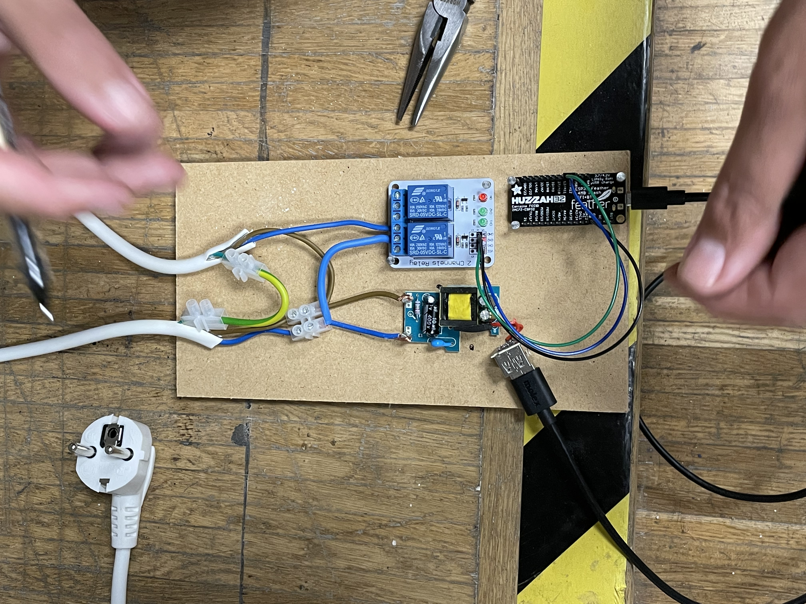
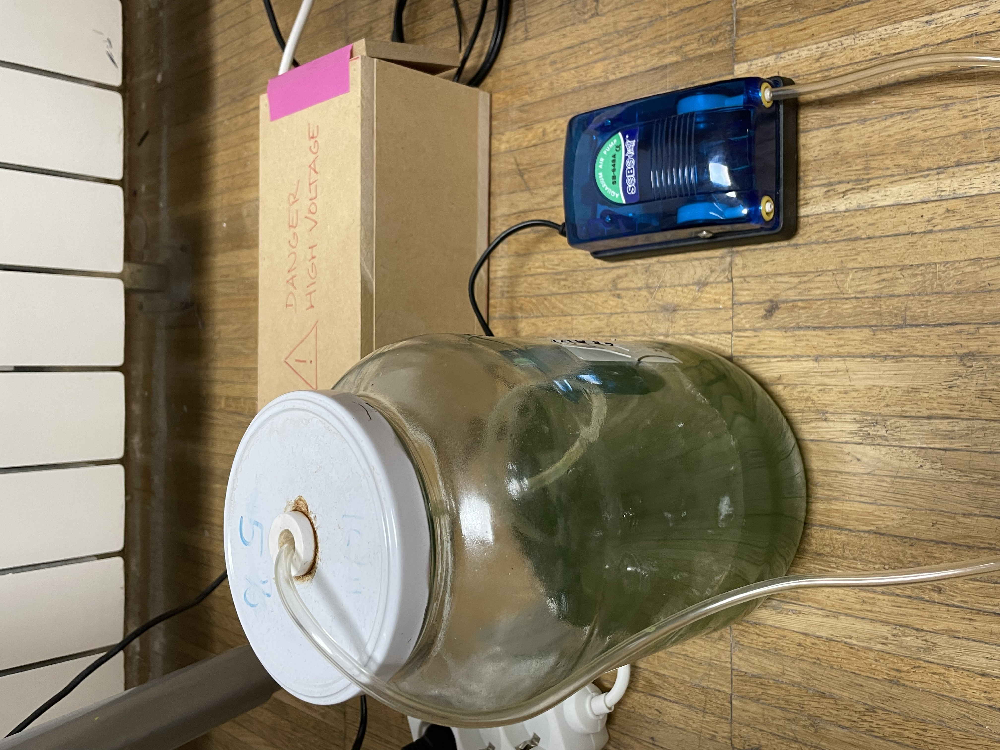
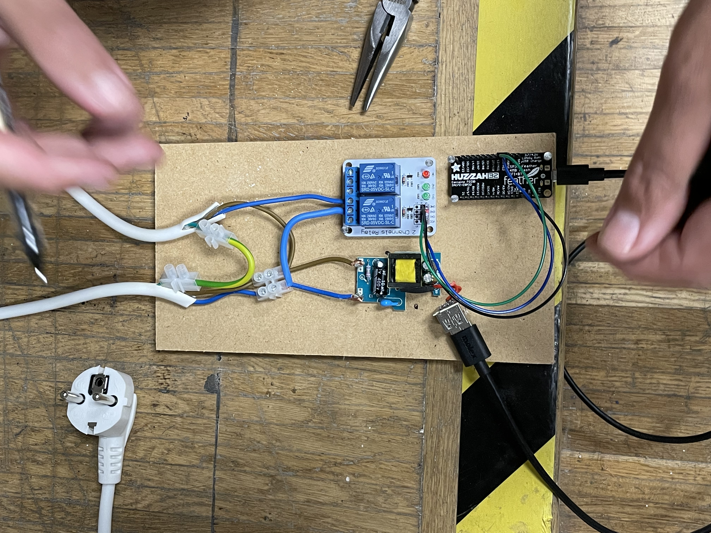
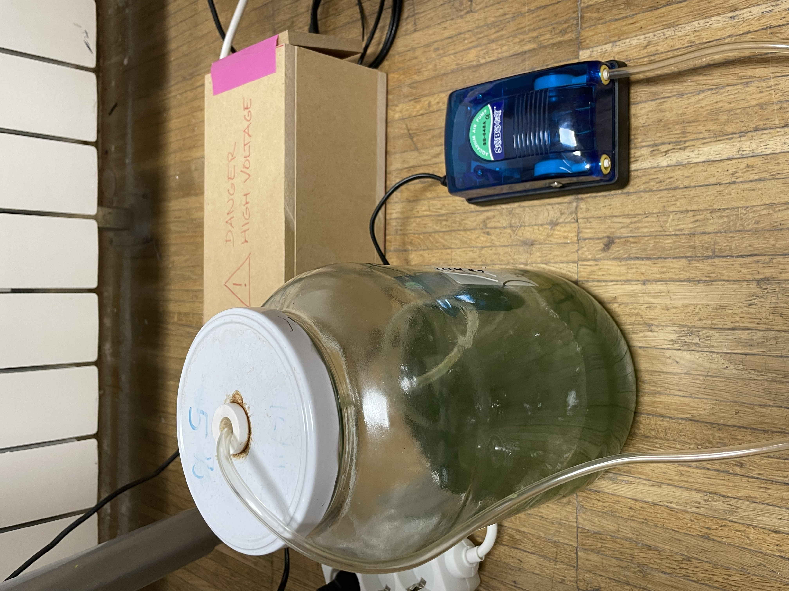

Heading
Remember that your deliverables for next week are the following:
1. Reflect on your own RtD toolbox based on “your new me” and create a “new workspace”. You need to map what you thin you can have available fo your project (materials, infrastructure, things and people). Like the examples I showed in the class.
2. Select the main roles of prototyping and other design activities that you want to use based on the context you are in (onion mapping from the Atlas) and add them to your design space. The second part is to relate part 1 to the roles of prototyping you are interested in and the context application of your project. Then try to visualize them in your personal design space.
3. Do your first design experiment applying one or different roles of prototyping.

 
My experiment from start to finish (from top left): Drawing schematics, connecting the circuit, assembling on a wooden board and the final enclosed product regulating the air pump. Done together with Joachim.
Heading
Some reflections here.

Image Credits